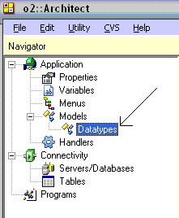
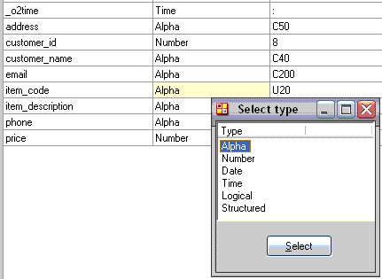
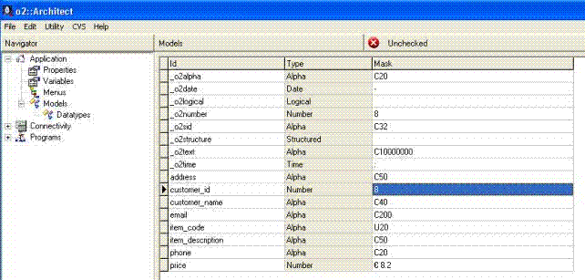

|
| |||||||||||||||||||
Questo modulo spiega come si opera all’interno del repository dei datatypes
Al termine di questo capitolo il programmatore sarà in grado di:
E’ arrivato il momento di iniziare a sviluppare la tua applicazione "Il mio negozio online”.
Come abbiamo visto nei precedenti moduli, ci sono 4 frasi nella definizione di una applicazione: nel rispetto di quello che è stato dichiarato il percorso corretto di sviluppo dell’applicazione, analizzeremo in questo capitolo i modelli di dato di cui avremo bisogno nel corso dell’applicazione.
Selezioniamo models - datatypes dal navigator menu, e apriamo quindi il repository dei modelli.
Dopo aver preso l’oggetto in check-out (team development) sarà possibile aggiungere nuove voci all’elenco base procedendo come descritto sotto:
- premere il tasto funzione F4 (create line) o posizionarsi sull’ultima riga della tabella e premere FrecciaGiù
- digitare il nome del modello nella colonna Id
- selezionare la tipologia tramite il tasto funzione F5 (zoom) dalla colonna type
- indicare la formattazione del campo dalla colonna Mask; di seguito alcuni esempi di utilizzo di mask:
Tipo Mask Significato ALPHA C50 Campo alfanumerico lungo 50 che accetta sia maiuscole che minuscole ALPHA U30 Campo alfanumerico lungo 30 che trasforma sempre il dato inserito in caratteri maiuscoli ALPHA L30 Campo alfanumerico lungo 30 che trasforma sempre il dato inserito in caratteri minuscoli NUMBER 6 Intero lungo 6 NUMBER $ 8.2 Valore numerico composto da indicazione valuta, 8 interi e 2 decimali separati da punto LOGICAL Valore booleano (true/false): non ha mask DATE - Esprime le date nella forma dd-mm-yyyy DATE / Esprime le date nella forma dd/mm/yyyy ALPHA U1[Si|No|Forse] Campo alfanumerico lungo 1 carattere maiuscolo che può assumere solo 3 valori: S, N, F. Le descrizioni estese esposte tra parentesi verranno automaticamente visualizzate all’interno del controllo combobox/listbox TIME : Esprime i time nella forma hh:mm:ss - per eliminare una voce dall’elenco utilizzare il tasto funzione F3 (delete line) dopo essersi posizionato sulla riga da eliminare.

| © 2008 Software4U.it | ||||